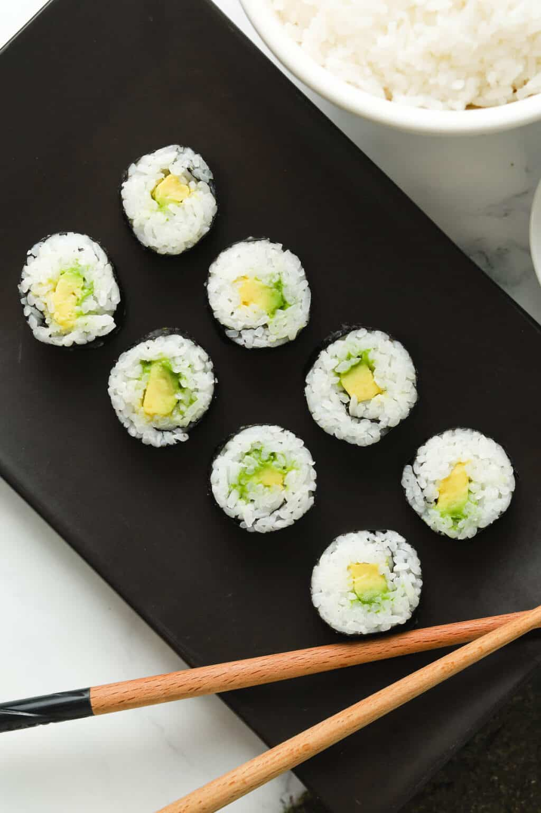

Avocado Maki

Avocado Maki - easy to make at home
Avocado Maki are one of those foods you could eat everyday (at leas I could). You can get them literally everywhere and usually not regret it.
But Maki are not the most affordable food to enjoy on a daily basis. Thats why you should just make them yourself and save a pretty penny doing so!
Ingredients
- Sushi Rice
- Seaweed Sheets
- Avocado
- Lemon (optional)
If you can, use a sushi rolling mat. If you don't have one you can use a dish towel.
Preparation
- You can cover the sushi mat with plastic wrap for easier cleanup.
- Add the nori sheet to the bamboo mat, shiny side down. Grab a handful of rice and spread it on ¾ of the nori sheet, leaving about ½ inch of the upper portion of the nori uncovered. When spreading the rice, dip your fingers into some water to help keep the rice from sticking.
- Layer 3-4 pieces of sliced avocado to the center of the rice spread, from one side to the other.
- With clean hands, grab the top of the mat and roll it over to close the filling.
- Use your bamboo mat and squeeze it across to shape the roll tightly into a circular shape. Pull the bamboo mat over and continue shaping the roll until you complete it.
- Use a sharp knife to swiftly cut the roll into 1 inch thick rolls.
- If you don't eat them right away, you can sprinkle some lemon over your creation. This will keep the Avocado from turing brown. (Also lemon goes great with everything.)
Home